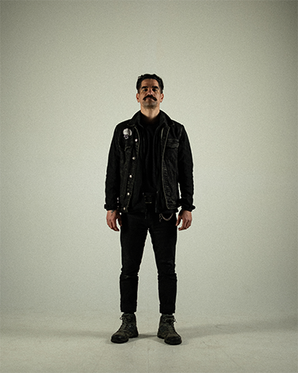
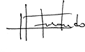

Artista · Fotea · Desktop · 1440
001 Herick Frontado
@herickfrontado[BIO CORTA: dos o tres líneas escritas por la persona. Ciudad de origen, ciudad actual, qué fotografía.]


Obra
Set 001 · [N] fotosArtista · Expone · Desktop · 1440
Rubén Mavarez
@rubenmavarezb[BIO CORTA: dos o tres líneas escritas por la persona. Ciudad de origen, ciudad actual, qué fotografía.]
 Frase y firma manuscritas: [PENDIENTES]
Frase y firma manuscritas: [PENDIENTES]
Obra
Exposición · 8 fotosArtista · Fotea · Mobile · 390
001 Herick Frontado
@herickfrontado[BIO CORTA: dos o tres líneas escritas por la persona.]
Obra
Set 001 · [N] fotosArtista · Expone · Mobile · 390
Rubén Mavarez
@rubenmavarezb[BIO CORTA: dos o tres líneas escritas por la persona.]
Obra
Exposición · 8 fotosArtista · Sin obra · Desktop · 1440
Gabriela Rondón
[HANDLE][BIO CORTA: dos o tres líneas escritas por la persona. Ciudad de origen, ciudad actual, qué fotografía.]
Obra
Exposición · Edición 01Las fotos se cargan cuando la persona las entrega.
Artista · Sin obra · Mobile · 390
Gabriela Rondón
[HANDLE][BIO CORTA: dos o tres líneas escritas por la persona.]
Obra
Exposición · Edición 01Las fotos se cargan cuando la persona las entrega.
Lightbox · Desktop · 1440
001 Herick Frontado · [TÍTULO DE LA FOTO]
1 / [N]